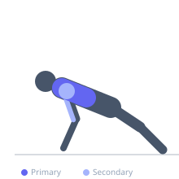

Exercise guide / Swiss Ball Push-Up with Feet Elevated
Swiss Ball Push-Up with Feet Elevated
An advanced push-up variation combining both hands on a swiss ball with feet elevated on a bench or box. The simultaneous unstable hand surface and decline body angle increases upper chest activation and dramatically elevates the demand on rotator cuff and serratus anterior stabilizers. This combination requires high levels of shoulder stability, core rigidity, and proprioceptive control.
Primary muscles
pectoralis major clavicular
pectoralis major sternal
Secondary muscles
deltoid anterior
triceps lateral head
Stabilizers
infraspinatus
supraspinatus
pectoralis minor
transverse abdominis
Equipment
Swiss Ball (Stability Ball / Exercise Ball)
Flat Bench


Starting position
- Place both hands on a fully inflated swiss ball and walk feet back onto a bench, creating a decline position. Arms extended, body in a straight line from feet to shoulders.
Setup
- Position the bench behind and the swiss ball in front. The decline angle should be 15–30 degrees. Fully inflate the ball for maximum stability.
Steps
- Step 1: Establish the starting plank position with hands on ball, feet elevated on bench.
- Step 2: Slowly lower the chest toward the ball, keeping the ball as still as possible.
- Step 3: Descend until the chest nearly touches the ball top.
- Step 4: Press back to full arm extension. Throughout, keep the core braced and ball controlled.
Coaching cues
- Squeeze the ball inward to stabilize it and activate the serratus
- Think of the ball as frozen in place — your job is to keep it there
Breathing
- Inhale on descent, exhale on press.
Range of motion
- Full depth to near-chest-on-ball, full lockout at top.
Tempo
- 3-1-2-0
Common mistakes
- Attempting before mastering flat swiss ball push-ups
- Allowing the ball to roll due to uneven hand pressure
- Hips rising in a pike — maintain the straight declining line
Safety
- Have a stable bench of appropriate height; too high creates excessive shoulder stress
- Ensure ball is on a non-slip surface
- Master each progression (flat floor push-up → swiss ball push-up → elevated feet) before combining
Training
- hypertrophy: 5–10 reps
- strength: 3–6 reps
- hypertrophy: 3–4 sets
- Rest: {'hypertrophy': 90, 'strength': 180}